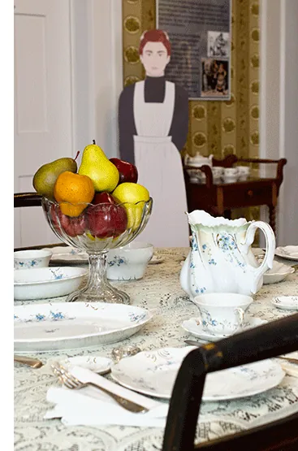
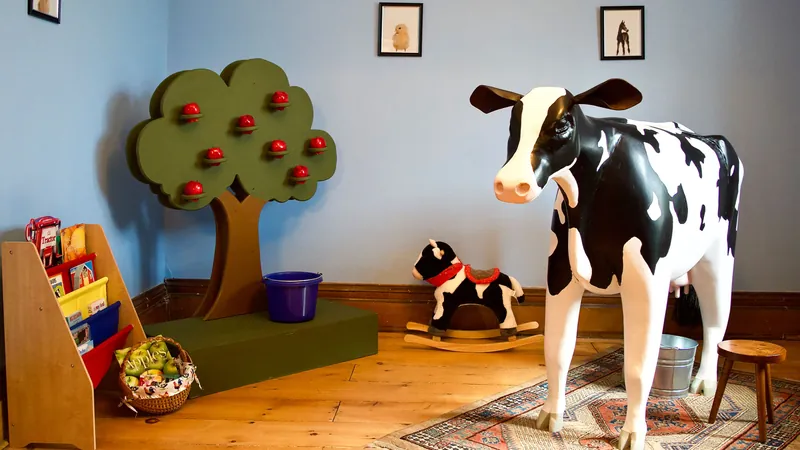

In 1852, Dr. Andrew Oliver built a large brick Italianate style house on Main Street in Penn Yan, an 18 room home given as a wedding gift to his son, William.
William had three children, Jennie, William (another doctor), and Carrie, who lived their entire lives in the Oliver House. As none of them had children, the family line ended with the death of Carrie in 1942. Her will deeded the house to the village of Penn Yan.
In 1948, the Society took over the whole of the Oliver House and has operated it as a museum ever since.
What’s inside
Period rooms are furnished with an eclectic mix of the Olivers’ belongings and the collections of the Historical Society, many with original furnishings and portraits. One room is dedicated to Native American history, and others hold changing local history exhibits.
Guided tours are available. Families with children are welcome.
Exhibits in the house
The Doctor Is In
For 100 years the Oliver doctors treated injuries from train, sawmill and farming accidents, burns, and diseases such as dropsy, catarrh and apoplexy. The exhibit focuses on their training, treatments and daily life.
On display are Dr. Andrew Oliver’s desk with daily ledger, the medical library, and examples of tonics and treatments used to heal the sick.

Irish Domestics
By 1850 there were just over 300 Irish-born people living in Yates County, most of them in the village of Penn Yan. The 1860 census shows that all but two of the 125 Irish-born women listed “domestic servant” as their occupation.
The Oliver family employed several female servants on Main Street. Learn what it must have been like for Mary Finnegan, age 19, or Kate Sweeney, age 15, to be servants in the Oliver household in 1860, and see a few small artifacts that made the journey with them across the Atlantic.

The children’s room
A dedicated room on the second floor, painted a colorful blue and decorated with images of young farm animals. Children are invited to meet Betsy the cow and harvest apples off a tree.
“We are very pleased to offer a fun learning experience for our youngest guests. The agricultural theme is a salute to our farming friends and neighbors.” Tricia Noel, Executive Director.
Little Yates
Two million years ago, glacial sheets cut deep gashes in the western New York land, forming eleven Finger Lakes. Explore Yates County’s origin in the newest exhibit in the Oliver House Museum.
Plan your visit
Hours
Open Tuesday to Friday, 9:00 am to 4:00 pm. Closed Sundays, Mondays, all major holidays and when local public schools are closed due to the weather.
Admission
Free, a suggested donation of $5 per person is welcome. Large groups are welcome by appointment.
Where
The Oliver House Museum is on the corner of Main and Chapel Street. Parking is at 107 Chapel Street, Penn Yan.